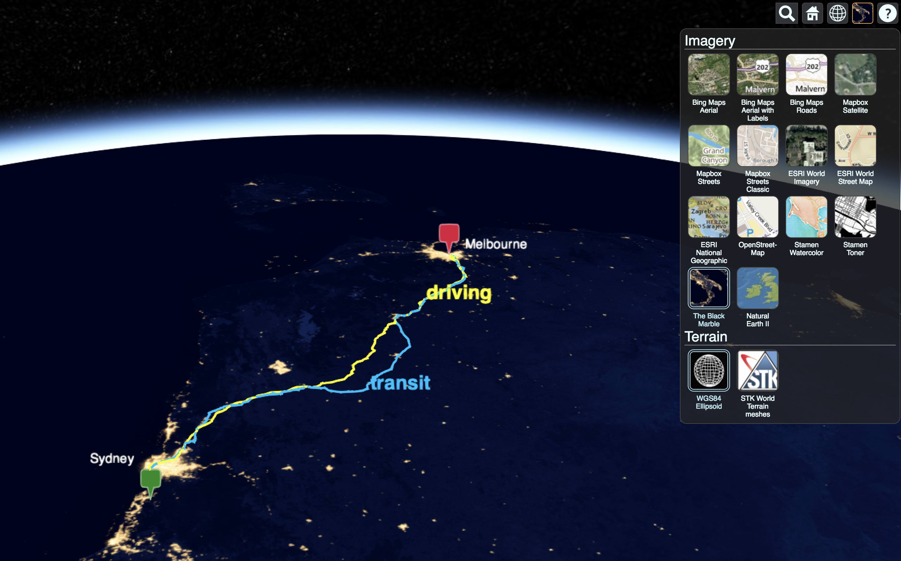
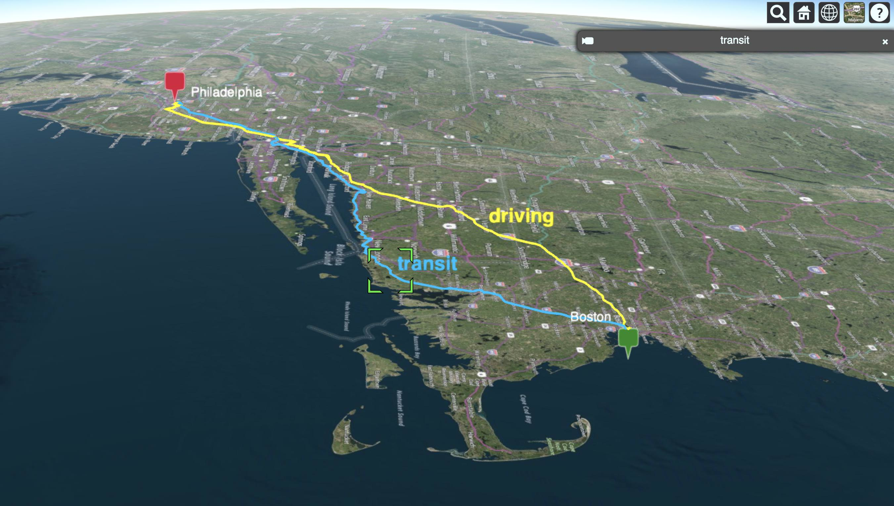

WayFinder3D
Compare recommended routes and estimated travel times on a 3D globe

About
WayFinder3D is an applicaton for comparing recommended driving, transit, bicycling and walking routes and estimated travel times on a time-dynamic 3D globe.
WayFinder3D is built with Python, CesiumJS and Google Maps API.
Setup
See setup instructions on Github.
Examples
You can generate directions from an origin to a destination via four modes: driving, transit, bicycling and walking like this:
python run.py \
--origin="Washington Square Park, New York City" \
--destination="Central Park, New York City" \
--modes="driving,transit,bicycling,walking"
If you only want to view select modes, such as driving and transit, you can do so like this:
python run.py \
--origin="Venice" \
--destination="Milan" \
--modes="driving,transit"

Basemaps
You can select from Cesium's built in collection of basemaps by clicking on the imagery icon in the upper right corner:

Camera
You can force the camera to follow a particular mode by selecting the mode label and clicking the camera icon in the upper right.

How it works
Wayfinder3D fetches directions and travel times from the Google Maps Directions API,
converts them into CZML (Cesium’s JSON format for describing a time-dynamic graphical scene),
and visualizes them in the browser using Cesium’s 3D globe engine.